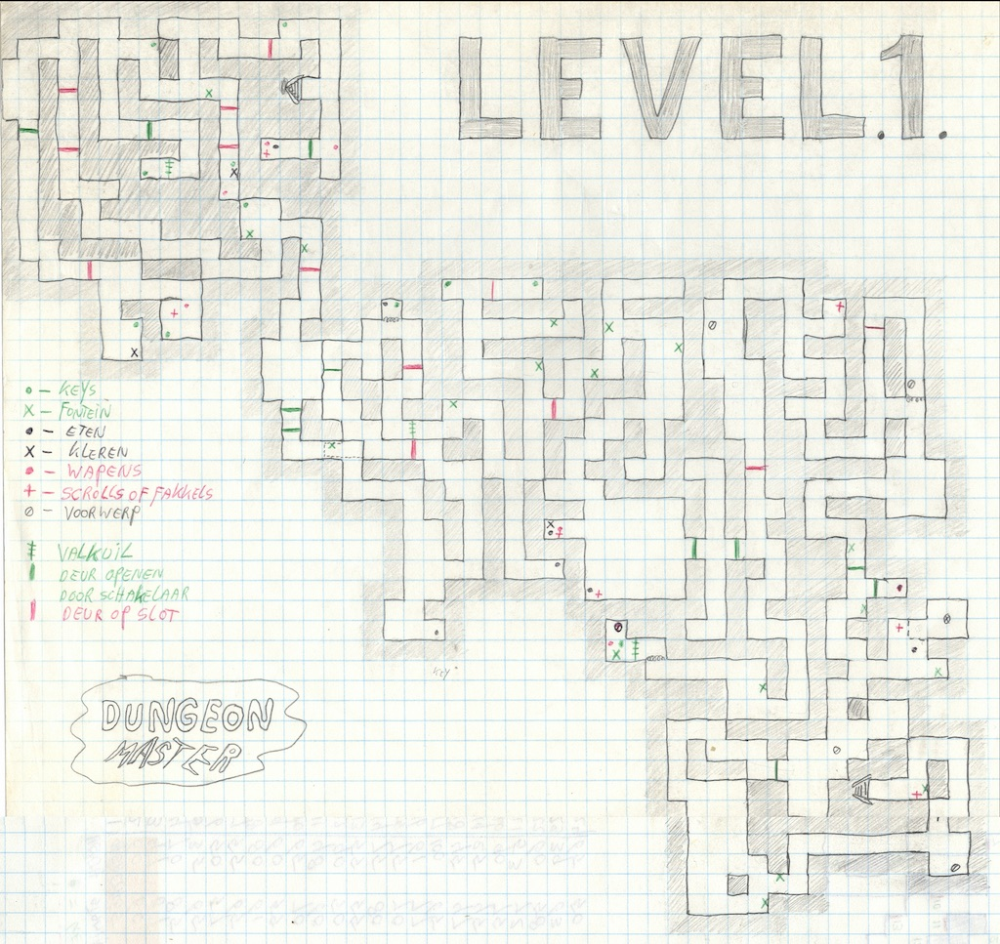
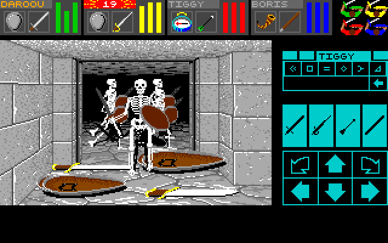

MON EXPÉRIENCE... DE JOUEUSE
De mon point de vue, j'admire le côté avant-gardiste de Dungeon Master, mais je ne suis pas assez patiente. Sans carte, sans explications et avec une interface dense, j'ai dû accepter de perdre du temps, de me tromper et de recommencer.
Je pense qu'à l'époque, ce contrat était davantage accepté. Jouer sur micro-ordinateur demandait souvent plus d'efforts et cela faisait partie du plaisir. Aujourd'hui, comme joueuse moderne, je rentre dans le jeu avec d'autres réflexes.
Je veux comprendre rapidement avec des feedbacks clairs et une navigation plus fluide. Dans Dungeon Master, je dois au contraire ralentir. J'ai trouvé cela frustrant, mais aussi intéressant, parce que le jeu me force à jouer autrement.
La confrontation entre mes attentes modernes et le design ancien fait finalement partie de la richesse de mon expérience.
SE PERDRE... FAIT PARTIE DU JEU !

Labyrinthe de Dungeon Master dessiné par Paul Neiland et AtariCrypt.
Il n'y a pas de carte ni de mini-map. Le donjon est grand, possède plusieurs étages et il est très facile de se perdre. À l'époque, beaucoup de joueurs dessinaient leurs propres cartes à la main. C'était presque une compétence de survie.
Paradoxalement, ce qui peut sembler être un défaut devient aussi une qualité. L'absence de carte force le joueur à observer, à se souvenir des chemins et à analyser le level design. Elle oblige également à recommencer et à apprendre progressivement l'organisation du donjon.
Lorsque j'ai joué, je me sentais réellement dans un labyrinthe. Je tournais en rond encore et encore, ce qui était très différent de mes expériences habituelles.
Cette contrainte crée une relation très forte avec l'espace. Soit on ne cherche pas à comprendre le donjon et on avance principalement par hasard, soit on apprend les déplacements et les différents chemins pour avancer beaucoup plus rapidement.
Le jeu ne prend donc pas le joueur par la main. Il est véritablement livré à lui-même.
UNE INTERFACE... À APPRENDRE

Des squelettes font la queue pour vous combattre...
J'ai retrouvé cette même difficulté avec l'interface. Elle est très riche et a été pensée pour être intuitive. Une fois son fonctionnement compris, sa logique devient claire, mais au premier contact, c'est un véritable langage à apprendre.
C'est aussi un ressenti lié au fait que je découvre le jeu en tant que jeune joueuse. Je suis habituée aux tutoriels, aux icônes standards, aux indications et aux différents feedbacks qui permettent de comprendre rapidement ce qu'un jeu attend de moi.
Dans Dungeon Master, j'ai dû comprendre son fonctionnement par les essais, les erreurs et l'observation. Pour être honnête, j'ai cliqué partout !
UN JEU ANCIEN... FACE À MES HABITUDES MODERNES
Dungeon Master m'a donc demandé de changer ma manière de jouer. Là où j'attends aujourd'hui qu'un jeu m'indique rapidement son fonctionnement, celui-ci me demande d'expérimenter et d'accepter de ne pas immédiatement comprendre ce que je dois faire.
Cette expérience peut être frustrante, mais elle permet aussi de comprendre à quel point nos habitudes de joueurs ont évolué. Sans les expérimentations de jeux comme Dungeon Master, les jeux d'aujourd'hui seraient probablement très différents.
Comme l'a dit Lavoisier : "Rien ne se perd, rien ne se crée et tout se transforme."